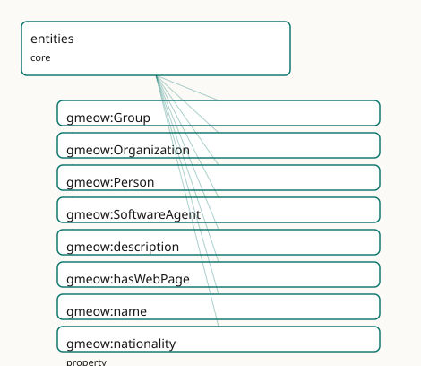

GMEOW Entities Module
- IRI: https://blackcatinformatics.ca/gmeow/slices/entities
- Tier: core
Group: core
What This Slice Covers
This slice owns 8 terms and contributes 42 mapping or projection rows. Use it when its terms match the native fact you want to preserve; use the linkage tables to see how those facts leave GMEOW for consumer vocabularies.
Dependencies
gmeow:slices/contactsgmeow:slices/documentsgmeow:slices/kernelgmeow:slices/languagegmeow:slices/namesgmeow:slices/placesgmeow:slices/trust
Consumers
- Every slice describing people, organizations, or things; the mail corpus; the identity facets.
Local Map

Examples
Agent Sortals
- Source:
slices/core/entities/examples/agent-sortals.ttl - GMEOW terms:
gmeow:Group,gmeow:Organization,gmeow:Person,gmeow:SoftwareAgent,gmeow:WebPage,gmeow:description,gmeow:hasWebPage,gmeow:name,gmeow:subOrganizationOf - External prefixes:
gufo
# SPDX-FileCopyrightText: 2026 Blackcat Informatics® Inc. <paudley@blackcatinformatics.ca>
# SPDX-License-Identifier: CC-BY-4.0
#
# Worked example: the four agent sortals . A small consultancy, two of its
# people, an informal working group, and its CI bot — each a distinct gufo:Kind
# beneath the kernel's gmeow:Agent. The flat naming tier (gmeow:name) carries the
# 80% case here; anything that needs structure — a reified PersonName, a contact
# point, a location — attaches to these Kinds from its own slice (the entities
# slice stays deliberately thin). Person ⟂ Organization ⟂ SoftwareAgent are
# pairwise disjoint (a human is never a bot); Group is deliberately NOT disjoint
# (a structured organization is arguably also a group, P9).
@prefix gmeow: <https://blackcatinformatics.ca/gmeow/> .
@prefix ex: <https://blackcatinformatics.ca/gmeow/examples/entities/> .
@prefix rdfs: <http://www.w3.org/2000/01/rdf-schema#> .
# --- Organization: the flat name/description tier. A structured web presence
# (gmeow:hasWebPage → a WEMI gmeow:WebPage) is shown in the documents example;
# here the flat tier carries it.
ex:blackcat a gmeow:Organization ;
gmeow:name "Blackcat Informatics Inc."@en ;
gmeow:description "A small ontology and tooling consultancy."@en .
# --- People: gmeow:Person, the identity-supplying sortal everything else anchors
# to. Flat names suffice for the example; a contested or multilingual name
# would promote to the names slice's reified PersonName.
ex:mara a gmeow:Person ;
gmeow:name "Mara Okafor"@en ;
gmeow:description "Backend engineer; maintains the release pipeline."@en .
ex:tomas a gmeow:Person ;
gmeow:name "Tomáš Novák"@en .
# --- Group: a collection of agents treated as a unit WITHOUT the formal
# structure of an organization. Sub-organization decomposition would instead
# use gmeow:subOrganizationOf in the organization slice.
ex:platformTeam a gmeow:Group ;
gmeow:name "Platform team"@en ;
gmeow:description "An informal cross-functional working group, not a legal sub-organization."@en .
# --- SoftwareAgent: a process acting on behalf of an organization. Disjoint with
# Person; the "acts on behalf of" delegation is a provenance-layer relation,
# not subclassing.
ex:ciBot a gmeow:SoftwareAgent ;
gmeow:name "blackcat-ci"@en ;
gmeow:description "The CI build agent that runs Blackcat's release pipeline."@en .
Terms
Classes
| Term | Label | Definition |
|---|---|---|
gmeow:Group |
Group | A collection of agents treated as a unit without the formal structure of an organization. |
gmeow:Organization |
Organization | A structured group of agents — a company, institution, association, or governmental body — able to act as a single agent. |
gmeow:Person |
Person | An individual human being, living or deceased. |
gmeow:SoftwareAgent |
Software Agent | A software process or autonomous program that acts on behalf of a person or organization. |
Properties
| Term | Label | Definition |
|---|---|---|
gmeow:description |
description | A free-text note or description about an entity — the unstructured NOTE field (a biography, a remark, an annotation). Genuinely flat: unlike names, dates or ro... |
gmeow:hasWebPage |
has web page | Relates an entity to a web page representing it — a homepage, a profile page, a project site. The structured form of a 'website / URL' field: the page is a fir... |
gmeow:name |
name | A simple label by which an entity is known — the rdfs:label tier, for entities that do not need the full naming apparatus (organizations, software agents, sour... |
gmeow:nationality |
nationality | The country of a person's nationality (schema:nationality) — a gmeow:Place. The legal/national-identity bond, distinct from where a person currently lives. Non... |
Linkages
- Rows: 42
- Projection profiles:
dcat,dcterms,doap,foaf,gedcom,oai_dc,org,resume,schema-org,vcard - External vocabularies:
dc,dcterms,doap,foaf,gedcom,gxv,org,rdf,schema,vcard,wd
| Source | Kind | Profile | Predicate/Relation | Target | Evidence |
|---|---|---|---|---|---|
gmeow:Group |
equivalence | - |
owl:equivalentClass | foaf:Group | gmeow-classes.sssom.tsv; gmeow:eqClasses009; confidence 0.95 |
gmeow:Group |
equivalence | - |
skos:closeMatch | wd:Q874405 | gmeow-wikidata.sssom.tsv; gmeow:eqWikidata054; confidence 0.75 |
gmeow:Organization |
equivalence | - |
owl:equivalentClass | foaf:Organization | gmeow-classes.sssom.tsv; gmeow:eqClasses005; confidence 1 |
gmeow:Organization |
equivalence | - |
rdfs:subClassOf | org:FormalOrganization | gmeow-classes.sssom.tsv; gmeow:eqClasses006; confidence 1 |
gmeow:Organization |
equivalence | - |
owl:equivalentClass | schema:Organization | gmeow-classes.sssom.tsv; gmeow:eqClasses004; confidence 1 |
gmeow:Organization |
equivalence | - |
skos:exactMatch | wd:Q43229 | gmeow-wikidata.sssom.tsv; gmeow:eqWikidata002; confidence 0.9 |
gmeow:Person |
equivalence | - |
owl:equivalentClass | foaf:Person | gmeow-classes.sssom.tsv; gmeow:eqClasses002; confidence 1 |
gmeow:Person |
equivalence | - |
owl:equivalentClass | gedcom:Individual | gmeow-classes.sssom.tsv; gmeow:eqClasses003; confidence 0.95 |
gmeow:Person |
equivalence | - |
skos:closeMatch | gxv:Person | gmeow-genealogy.sssom.tsv; gmeow:eqGenealogy043; confidence 0.9 |
gmeow:Person |
equivalence | - |
owl:equivalentClass | schema:Person | gmeow-classes.sssom.tsv; gmeow:eqClasses001; confidence 1 |
gmeow:Person |
equivalence | - |
skos:exactMatch | wd:Q5 | gmeow-wikidata.sssom.tsv; gmeow:eqWikidata001; confidence 0.95 |
gmeow:description |
equivalence | - |
skos:closeMatch | dcterms:description | gmeow-dublin-core.sssom.tsv; gmeow:eqDcTerms002; confidence 0.9 |
gmeow:description |
equivalence | - |
skos:closeMatch | dcterms:description | gmeow-properties.sssom.tsv; gmeow:eqProperties037; confidence 0.9 |
gmeow:description |
equivalence | - |
owl:equivalentProperty | schema:description | gmeow-properties.sssom.tsv; gmeow:eqProperties036; confidence 1 |
gmeow:description |
equivalence | - |
skos:closeMatch | vcard:note | gmeow-properties.sssom.tsv; gmeow:eqProperties038; confidence 0.8 |
gmeow:hasWebPage |
equivalence | - |
skos:closeMatch | foaf:homepage | gmeow-properties.sssom.tsv; gmeow:eqProperties040; confidence 0.8 |
gmeow:hasWebPage |
equivalence | - |
skos:closeMatch | schema:url | gmeow-properties.sssom.tsv; gmeow:eqProperties039; confidence 0.8 |
gmeow:name |
equivalence | - |
owl:equivalentProperty | foaf:name | gmeow-properties.sssom.tsv; gmeow:eqProperties002; confidence 1 |
gmeow:name |
equivalence | - |
owl:equivalentProperty | schema:name | gmeow-properties.sssom.tsv; gmeow:eqProperties001; confidence 1 |
gmeow:name |
equivalence | - |
skos:closeMatch | vcard:fn | gmeow-properties.sssom.tsv; gmeow:eqProperties003; confidence 0.9 |
gmeow:Organization |
projection | org |
projects to / <= | org:FormalOrganization | gmeow:mapOrgOrganization; confidence 0.9; lossy: the formal/informal distinction is asserted, not derived — GMEOW organizations project as formal |
gmeow:Organization |
projection | schema-org |
projects to / = | schema:Corporation, schema:EducationalOrganization, schema:GovernmentOrganization, schema:NGO, schema:Organization, schema:Project | gmeow:mapSchemaOrganizationType; transform gmeow:fnOrganizationTypeToClass |
gmeow:Organization |
projection | schema-org |
projects to / <= | schema:dissolutionDate | gmeow:mapSchemaDissolutionDate; confidence 0.9; lossy: the destruction event's place, participants, and standpoint are dropped; only the instant survives as schema:dissolutionDate |
gmeow:Organization |
projection | schema-org |
projects to / <= | schema:foundingDate | gmeow:mapSchemaFoundingDate; confidence 0.9; lossy: the creation event's place, participants, and standpoint are dropped; only the instant survives as schema:foundingDate |
| ... | ... | ... | ... | ... | 18 more rows |
Guide
Entities — people, organizations, groups, and software agents
Slice:
https://blackcatinformatics.ca/gmeow/slices/entities· tier: core The FOAF / schema.org superset layer: the agent sortals everything else describes.
This slice mints the concrete agent Kinds beneath the kernel's gmeow:Agent category —
the things the mail corpus, the identity facets, and every people-describing slice talk
about. The stance is deliberately thin: the sortals carry identity, while names, contact
points, locations, documents, and trust assessments live in their own slices and attach
to these Kinds. Where common vocabularies flatten a person into a bag of string fields,
GMEOW keeps the flat tier honest (a simple name literal for entities that need nothing
more) and routes everything with structure — person names above all — to the structured
model, downcasting to "First Last" only in the projection layer (Principle 10: projection
is where lossiness is allowed, never storage).
The module's one axiom block is doctrine made checkable: distinct gufo:Kind
classes each supply their own principle of identity, so the core ultimate Kinds are
asserted pairwise disjoint — and only those whose disjointness is true.
The agent sortals
gmeow:Person
An individual human being, living or deceased. A gufo:Kind — the identity-supplying
sortal that the names slice's PersonName, the identity facets, and the relationship
relators all anchor to. Disjoint with Organization, SoftwareAgent, Location, ContactPoint,
CryptographicKey, Appellation, Language, and WritingSystem.
gmeow:Organization
A structured group of agents able to act as a single agent — a company, institution,
association, or governmental body. Sub-organization decomposition specializes the
kernel's universal gmeow:partOf spine in its own slice; here only the Kind lives.
gmeow:Group
A collection of agents treated as a unit without the formal structure of an organization
(gufo:Collection, under gmeow:Entity rather than gmeow:Agent). Deliberately
excluded from the disjointness axiom: a structured organization is arguably a group,
and asserting that overlap away would manufacture inconsistency (Principle 9).
gmeow:SoftwareAgent
A software process or autonomous program acting on behalf of a person or organization.
Disjoint with Person — a human is never a bot — while delegation and attribution are
provenance-layer relations, not subclassing.
The flat naming tier
gmeow:name
The rdfs:label tier: a simple, language-tagged label for entities that do not need the
full naming apparatus (organizations, software agents, sources, keys). It carries no
precedence over an entity's other names (Principle 9 — no privileged selector). Persons'
names are gmeow:PersonName structures in the names slice; the flat given/family
rendering is produced by downcasting that model at projection time, never stored here.
gmeow:description
The unstructured NOTE field — a biography, a remark, an annotation. Genuinely flat: unlike
names, dates, or roles, a note has no structure to reify, so no relator pairing exists.
Distinct from skos:definition, which documents ontology terms, not instances.
Non-functional; language-tag where applicable.
gmeow:hasWebPage
The structured form of a "website / URL" field: the page is a first-class gmeow:WebPage
(documents slice) whose IRI is its URL, so it can itself carry a title, language, and
rights. Non-functional — an entity may have several pages. Prefer this over a bare URL
literal: the bridge into the document layer is the point.
The disjointness doctrine
The owl:AllDisjointClasses axiom covers Person, Organization, SoftwareAgent, Location,
ContactPoint, CryptographicKey, Appellation, Language, and WritingSystem — cross-module
IRIs that resolve after merge. Deliberately excluded: Group (above) and the
InformationObject document / message / source family, where a Source may legitimately
also be a Document or CreativeWork. The rule is constitutional: add only disjointness
that is TRUE; benign overlap must never become an inconsistency (Principle 9).
Alignment & boundaries
This is the layer that projects to FOAF (foaf:Person, foaf:Organization,
foaf:Agent) and schema.org (schema:Person, schema:Organization) — by reference and
lossy projection, never import (Principle 5). Entity resolution — deciding that two
person records denote one human — is a solver-layer computation over the identity facets
(Principle 12); the slice never asserts owl:sameAs shortcuts. Depends on kernel,
names, contacts, places, documents, language, and trust; consumed by every slice that
describes people, organizations, or things.